01
背景
Background
HTC 計劃在商業場所營運 VR 街機。專案負責人最初建議只需一個簡單的預訂介面即可。然而，我很快就意識到，一開始就過於死板地定義框架是不切實際的。在只收到專案負責人提供的粗略大綱後，
我負責規劃整個系統架構。我清楚地認識到，每個頁面都需要設計成一個獨立的模組，以便適應未來的擴展和規模需求。
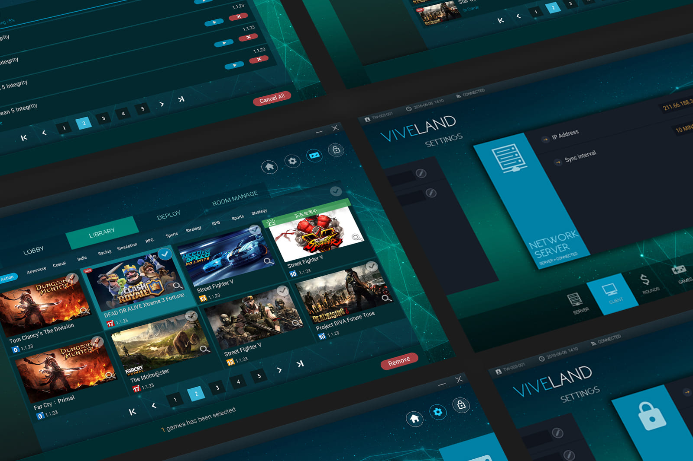
02
擔任角色
Responsibility
在這個專案中，我負責所有軟體規格、使用者體驗設計和介面素材。負責Viveport Arcade 店面 數位內容管理軟體的UX Flow 和 UI Assets的規劃和設計 。並實際參與三創 Viveland 店面規劃和視覺布置。
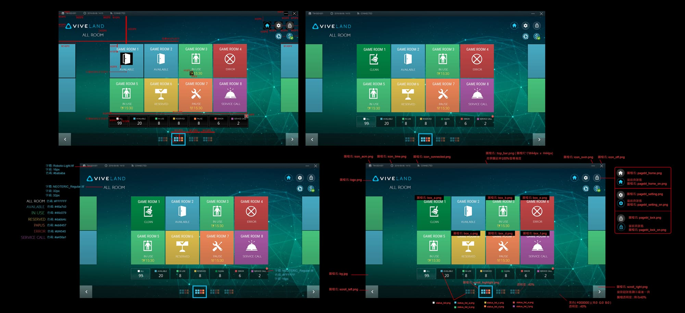
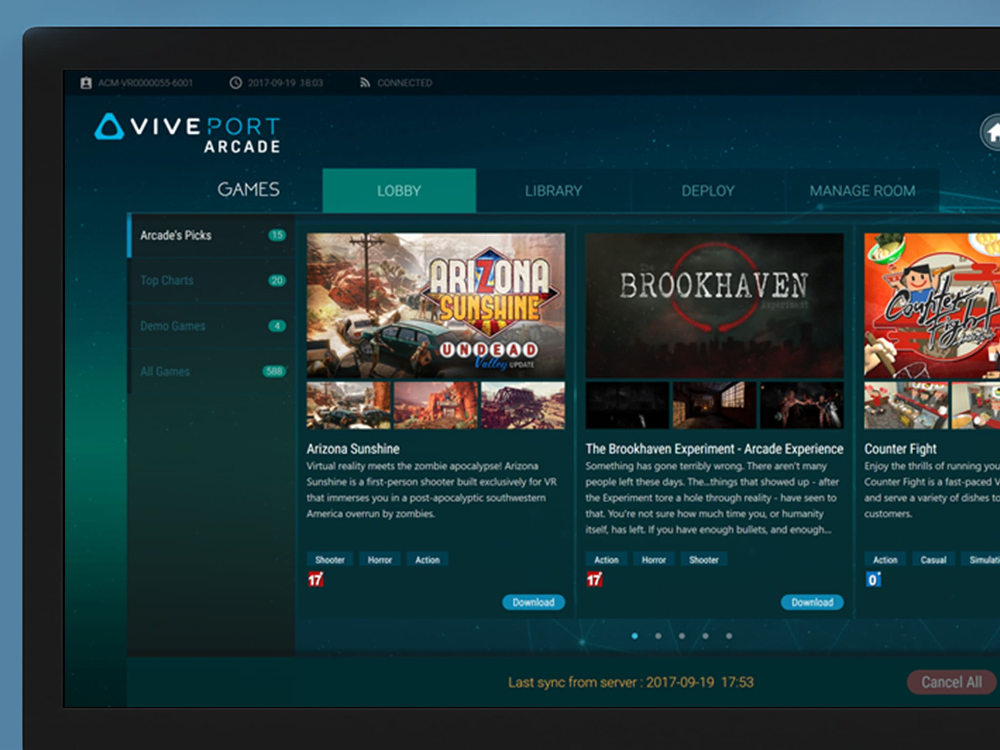
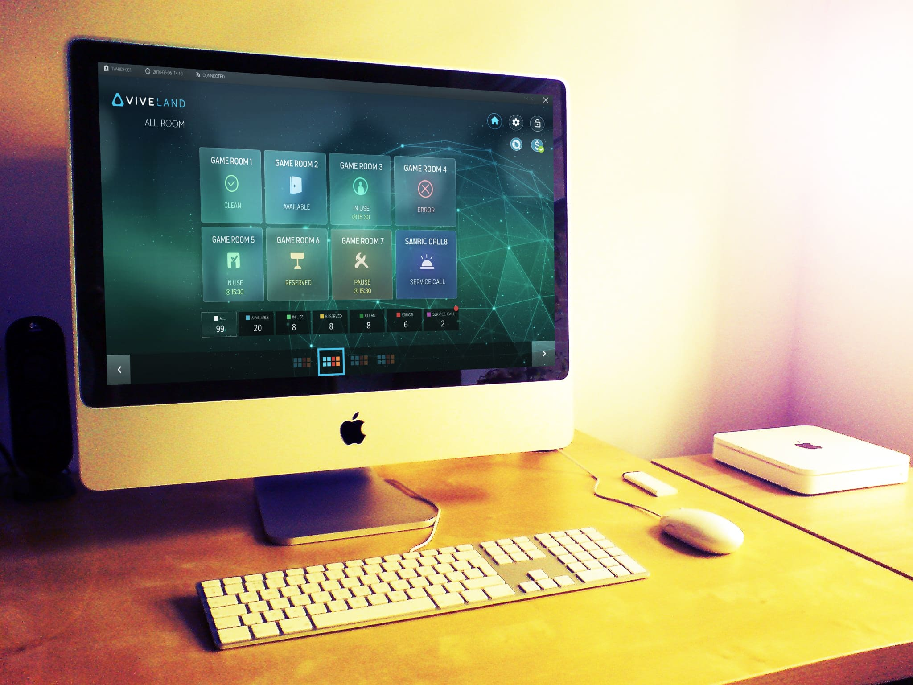
03
解決問題
Solutions
HTC 計劃在商業場所營運 VR 街機。專案負責人最初建議只需一個簡單的預訂介面即可。然而，我很快就意識到，一開始就過於死板地定義框架是不切實際的。在只收到專案負責人提供的粗略大綱後，
我負責規劃整個系統架構。我清楚地認識到，每個頁面都需要設計成一個獨立的模組，以便適應未來的擴展和規模需求。
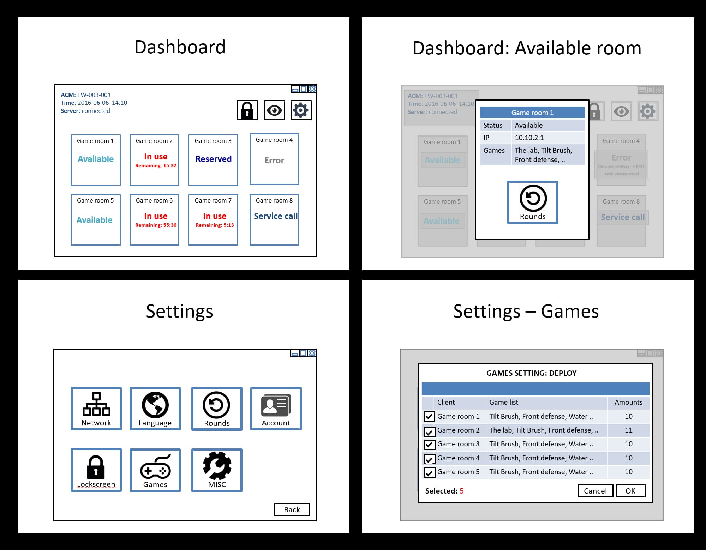
04
基本架構
Solutions
在規劃這種草創的軟體，因為企劃在初始時可能還不清楚具體規格和到底應該做到多大的規模時。我認為在初創時期就不應該將架構定死。例如初步規劃時，game的頁面還不成熟，初創時也並不清楚會有其他延伸的頁面。故在參與規劃時，我著手調整了整個結構，我認為最好用模組式的方式將每個功能獨立出來，日後以便方便擴充。
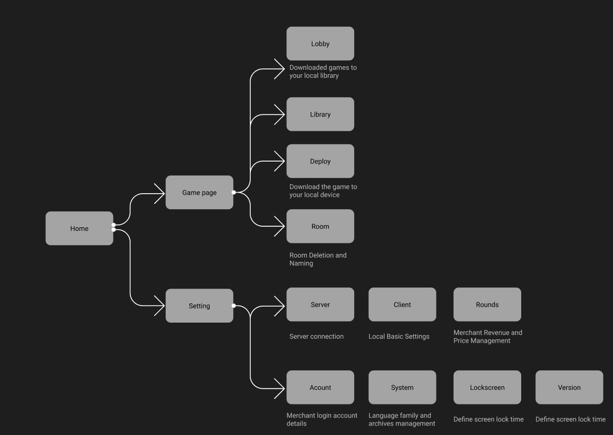
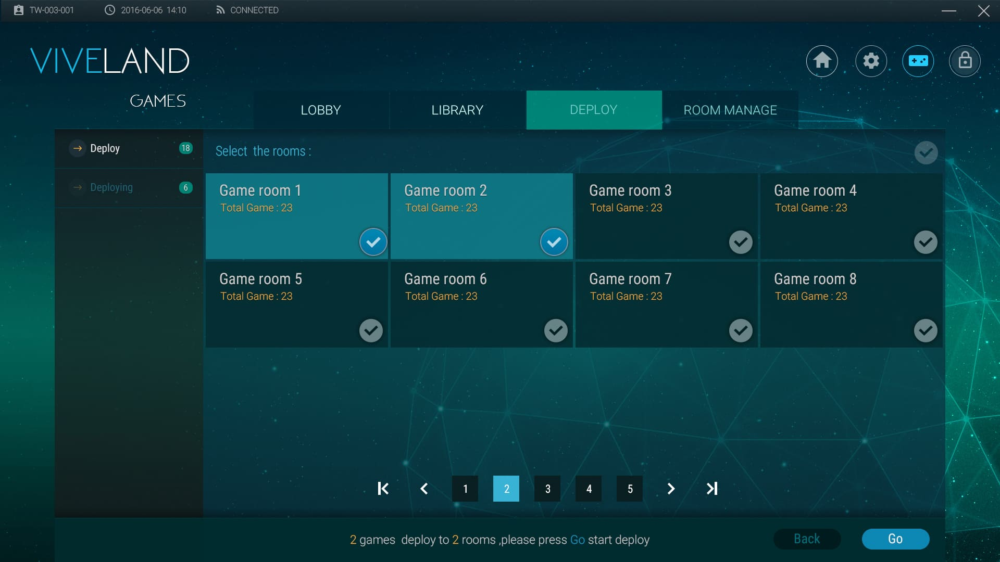
 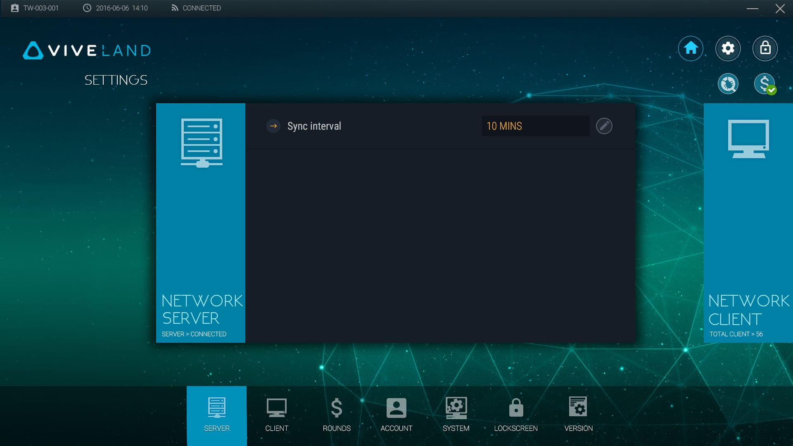
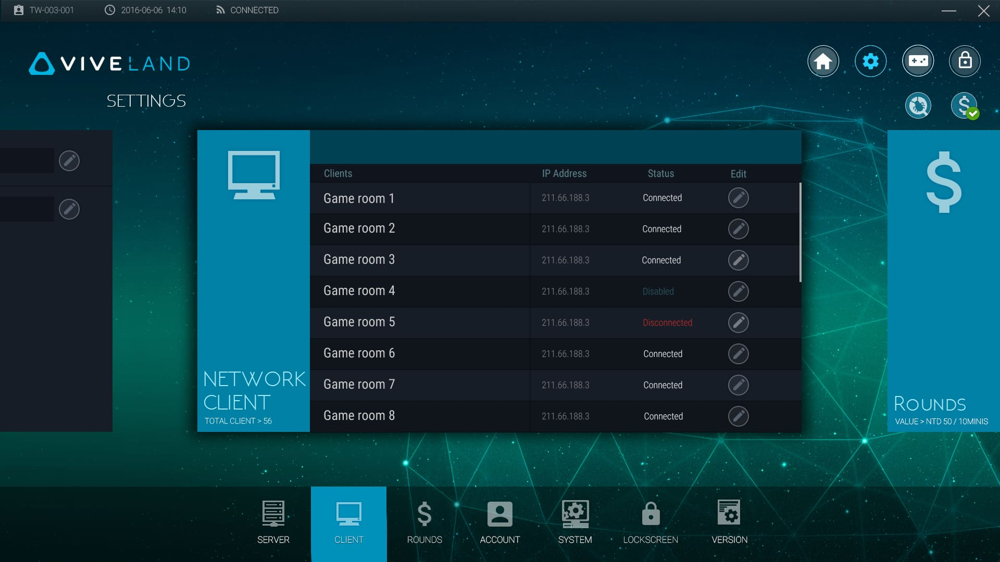
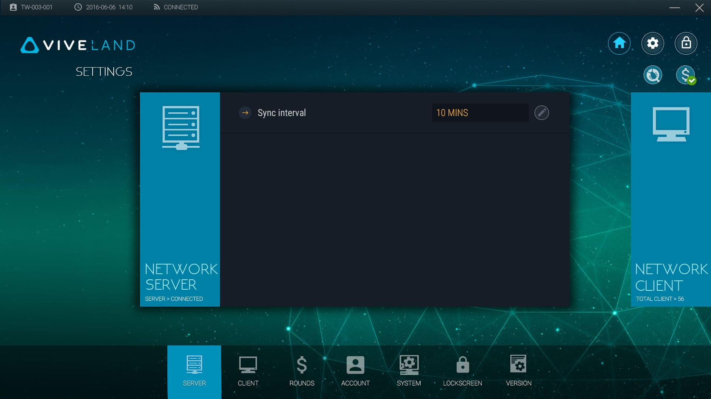
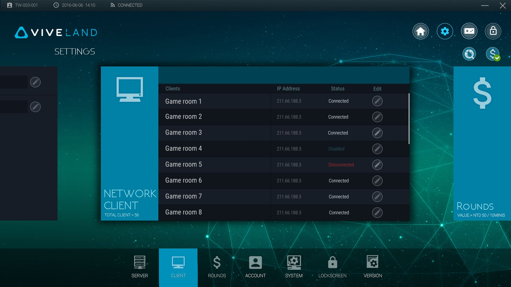
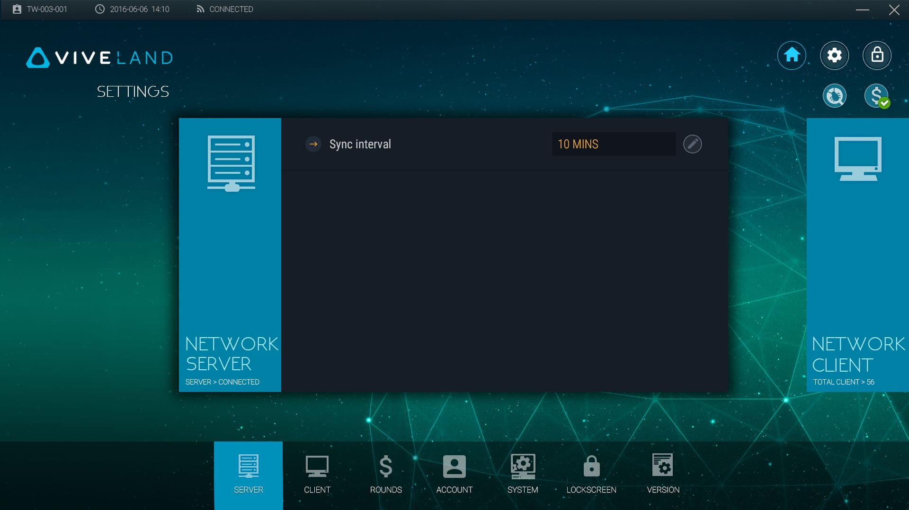
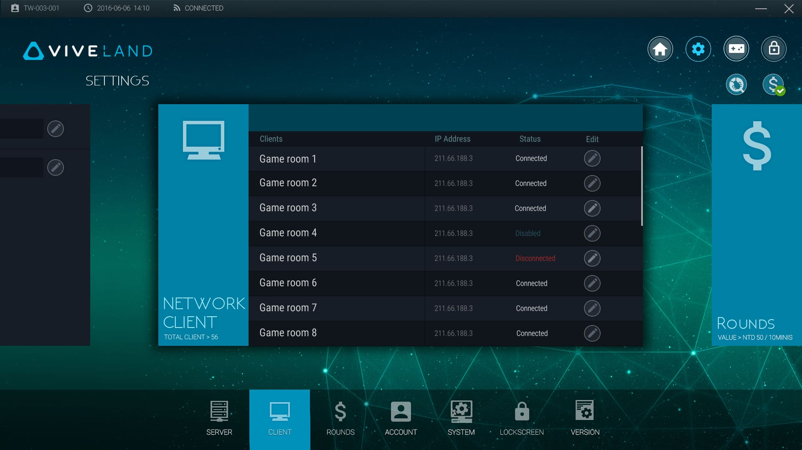